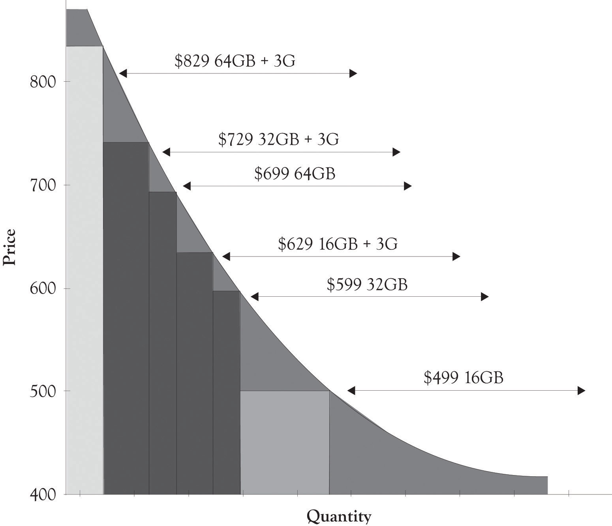
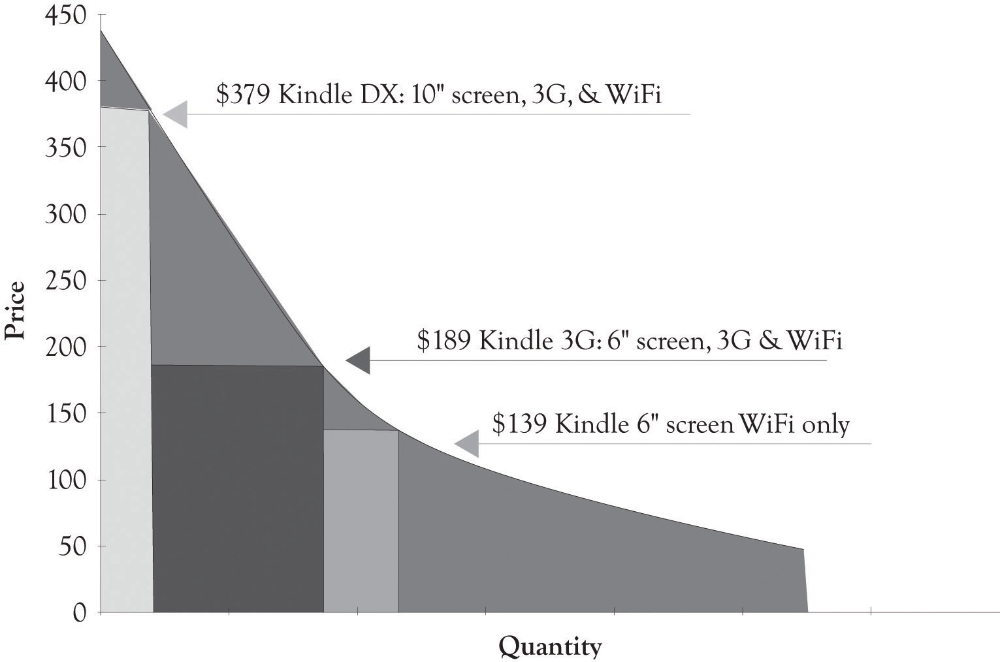

One particularly interesting area of competition is in the e-book arena. The Amazon Kindle started out very strong and looked like a strong contender to capture the market for electronic books. Apple founder Steve Jobs was not impressed and stated, “It doesn’t matter how good or bad the product is, the fact is that people don’t read anymore.”Markoff (2008). Well he did release an e-book reader, the iPad, that also had additional functionality. Amazon responded by releasing three Kindle versions and by developing an iPad app for downloading and buying books from Amazon. Figure 5.10 "iPad Differentiation" and Figure 5.11 "Differentiating the Kindle" illustrate PD curves for the iPad and Kindle, respectively. It is apparent that the Apple has taken great pains to develop versions for a wide range of individuals with differing price sensitivities at the high end.
Figure 5.10 iPad Differentiation
Figure 5.11 Differentiating the Kindle
